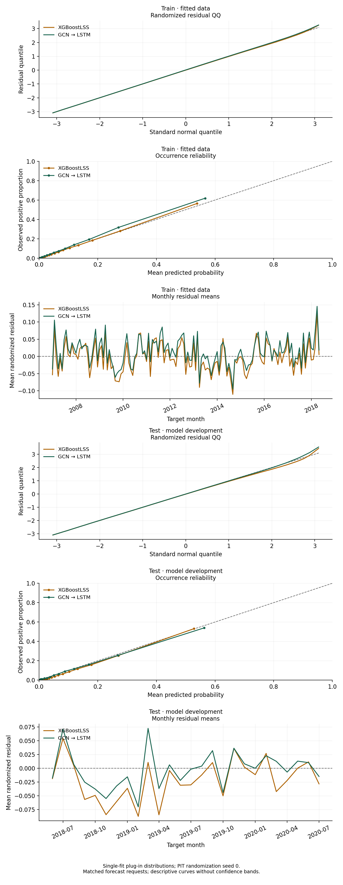
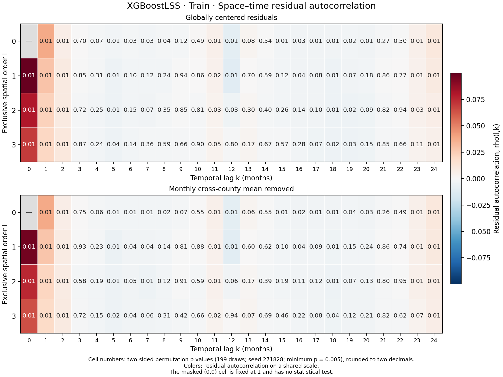
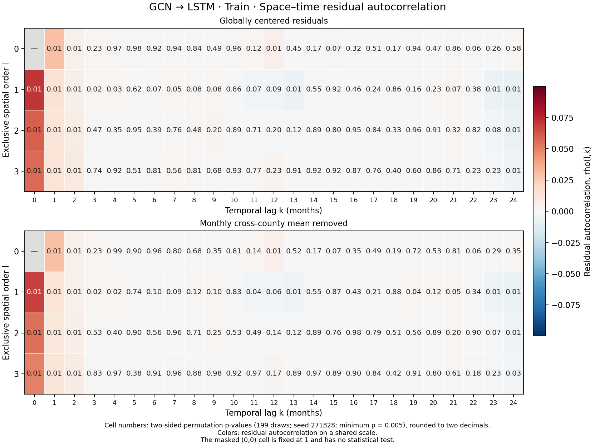
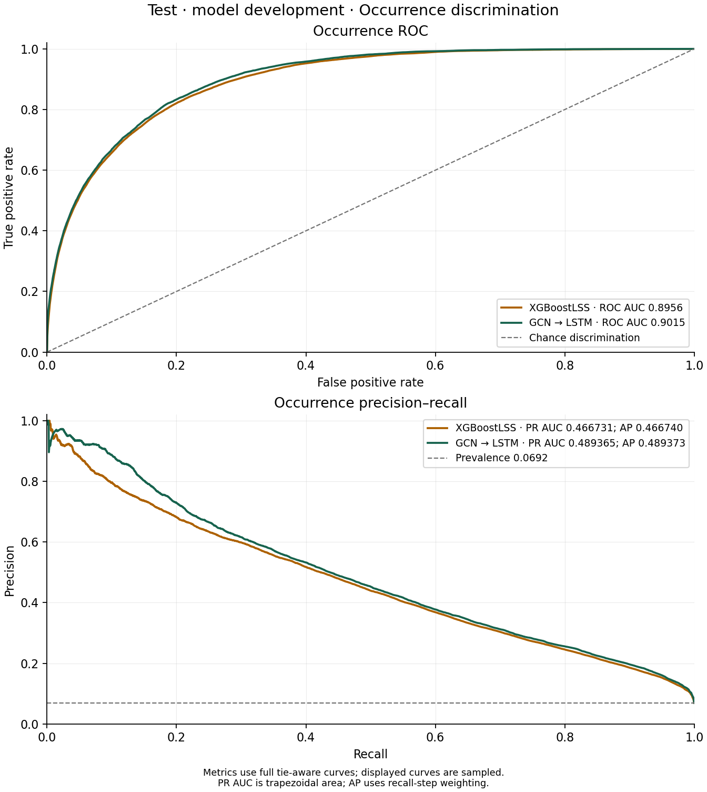

Comparison
Train and test evidence before validation
1 Compare the selected examples
The XGBoostLSS and GCN–LSTM examples share the same restricted forecast information: fixed terrain, calendar, county geography, and burned-area history available at each origin. Both use a 48-month lookback and twelve-month forecast horizon; XGBoost’s expanding county summaries additionally retain earlier history. Each class representative was selected by test NLL.
This chapter gathers the train/test evidence before looking at validation. Train diagnostics describe fitted data; test scores and diagnostics describe data already used for development. They help explain the selected examples, without establishing an independent model-class ranking. Both examples remain in the tutorial.
2 Scores and diagnostics
NLL evaluates the fitted probability mass or density at each response. CRPS compares the fitted cumulative distribution with the observed response. Lower values are better for both. The occurrence Brier score measures probability error; expected-fraction MAE measures error in \(p_{\mathrm{occ}}\mu\). These scores use saved plug-in hurdle distributions, not prediction intervals or parameter-uncertainty distributions.
Train and test comparisons use identical full forecast keys and outcomes for both models.
| Split | Model | Forecast requests | NLL | CRPS | Expected-fraction MAE | Occurrence Brier |
|---|---|---|---|---|---|---|
| Train | XGBoostLSS | 4,699,296 | -0.247288 | 0.0002081 | 0.0003282 | 0.055366 |
| Train | GCN → LSTM | 4,699,296 | -0.262647 | 0.0002046 | 0.0003331 | 0.051323 |
| Test | XGBoostLSS | 559,440 | -0.199363 | 0.0001836 | 0.0003095 | 0.048028 |
| Test | GCN → LSTM | 559,440 | -0.205715 | 0.0001841 | 0.0003136 | 0.046989 |
Residual summaries use the same randomized residuals as the plots. Undefined correlations are shown as an em dash.
| Split | Model | Residual mean | Residual SD | County-mean Moran I | Monthly lag-1 r |
|---|---|---|---|---|---|
| Train | XGBoostLSS | -0.005 | 0.992 | 0.089 | 0.229 |
| Train | GCN → LSTM | 0.012 | 1.002 | -0.025 | 0.242 |
| Test | XGBoostLSS | -0.025 | 0.982 | 0.104 | 0.055 |
| Test | GCN → LSTM | -0.004 | 1.003 | 0.123 | -0.184 |

On test, the graph-and-sequence model has the lower NLL, while XGBoostLSS has a slightly lower CRPS. The scoring rules emphasize different properties of the fitted distribution. These are descriptive comparisons of two fitted examples, without a significance or winner claim.
2.1 Reading the residual diagnostics
The QQ curves use randomized quantile residuals: a zero is randomized inside its predicted probability mass, positive responses use the fitted cumulative probability, and the resulting values are transformed to the standard normal scale. Agreement with the diagonal is descriptive evidence about marginal calibration. A fixed seed makes the randomization reproducible.
Occurrence reliability groups similar predicted probabilities and compares their mean with the observed positive-response proportion. Monthly curves average residuals by target month and can reveal persistent seasonal or temporal errors. Repeated forecasts of the same county-month contribute separate forecast requests; they are not independent experimental replications.
The spatial summary is Moran’s I of each county’s mean randomized residual, using the saved county graph. Its adjacency is symmetrized, self-loops are removed, and each non-isolated county’s neighbor weights sum to one. Isolated counties have zero weight rows and remain in the centering and county count. With centered county means \(z\), weights \(W\), and \(N\) counties, the reported coefficient is \(I=(N/\sum_{ij}W_{ij})(z^\top Wz)/(z^\top z)\). The temporal summary is the correlation of consecutive target-month mean residuals. Neither coefficient comes with an independence or permutation p-value.
The averaging periods differ across splits. Longer averaging can reveal persistent county patterns by reducing transient variation, changing Moran’s I even without stronger underlying dependence. Compare the two models within a split on their matched requests; an increase across splits is not evidence of increased dependence. No nominal row-independence tests or confidence bands are attached to these curves.
3 Training space-time autocorrelation
The G1 diagnostic retains the county-by-month residual field instead of first averaging away either dimension. Spatial order zero uses the county itself; orders one through three use exclusive neighbor shells at that graph distance. Temporal lag runs from zero to 24 months, with pairs formed within each forecast horizon before pooling.
3.1 XGBoostLSS

3.2 GCN–LSTM

The lower panel in each figure removes a common monthly component, helping distinguish broad monthly shifts from the remaining local persistence. The shared color scale supports comparison between models. A quiet training heatmap alone does not establish independent residuals or successful generalization.
The temporal reference shuffles whole target months, moving all horizons together; the spatial reference shuffles county labels while preserving each county’s series. Cells at spatial order zero use the month-permutation p-value; cells at temporal lag zero use the county-permutation value. When both orders are positive, the display uses the larger of the two p-values, following the existing G1 convention. The self-correlation has no informative test and is shown with an em dash.
These are unadjusted, exploratory permutation-reference values, not independent-row tests or a multiple-comparison correction. The correlation magnitude and the assumptions behind the shuffles are necessary context for these values. Each figure gives the number of draws and the minimum attainable p-value. Cell labels are rounded Monte Carlo estimates; unrounded values and the permutation settings are in the result manifest.
4 Occurrence ranking on test
ROC and precision–recall curves compare occurrence rankings over thresholds. ROC shows sensitivity against the false-positive rate; precision–recall focuses on the positive-response proportion among predictions classified as positive as recall increases. They complement the likelihood used for tuning and do not assess the positive burned fraction or probability calibration by themselves.

AP weights precision by recall increments; trapezoidal PR AUC linearly interpolates between curve points. They need not be identical. The graph-and-sequence model has higher test ROC AUC and both precision–recall summaries, while XGBoostLSS has the lower test CRPS. Occurrence ranking and the full burned-fraction distribution therefore need separate assessment.
The test split has already been used for tuning, so these are development comparisons. With both representatives fixed, Discussion assesses their validation scores and diagnostics without selecting a replacement winner.